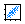

|
|
Scatter Plot Panel |
This panel displays a scatter plot of two properties, with the option of representing two more with color and symbol size.
To open the Scatter Plot panel, do one of the following:
Choose Chart → Scatter Plot in the main window.
Click the Scatter Plot button on the
toolbar.

To set up a scatter plot, choose the properties to display from the X-Axis, Y-Axis, Color by, and Size by option menus in the Settings section of the panel. If this section is not displayed, click Show Settings.
The row selection in the view is coupled to the selection of points in the scatter plot. You can change the selection in the view by selecting points in the scatter plot. Clicking or dragging selects points, shift-clicking or shift-dragging adds to the selection without removing any points; control-clicking or control-dragging changes (inverts) the selection of points without affecting the selection of other points.
The selection can also be used to control which points are displayed. Click Selected to show only the selected points. If you then change the selection, click Selected again to show only the new selection. To redisplay all points, click All.
To label the selected points, right-click and choose Show Labels from the shortcut menu. The labels include the structure and title, and the names and values of the properties that are represented by that point (x, y, color, size). The contents change when any of the properties plotted changes. The labels can be dragged to any point in the plot. They are connected with the plot point by a line. To hide individual labels, click the X in the label. To hide all the labels, choose Hide Labels from the shortcut menu.
The menu bar has two menus: File and Settings. The File menu has two items, Save Image, for saving the image in png, jpeg, or tiff format, and Close, for closing the chart. The Settings menu has the following items:
These buttons can be used to control which points are displayed.
Selected—Show only the points that have been selected in the scatter plot. You can select points by clicking or dragging, and you can invert the selection of points by control-clicking or control-dragging, without affecting the selection of other points. If you change the selection, you must click this button again to display the new selection.
All—Display all points in the plot.
This button shows or hides the Settings section. It is labeled Show Settings when the section is hidden, and Hide Settings when the section is displayed.
Displays the chart. The characteristics of the chart are changed using the Settings section.
This section contains the controls for choosing the properties that are represented on the chart. The properties listed on the option menus are the properties that are selected in the current view.
Choose the property that is displayed on the x axis.
Choose the property that is displayed on the y axis.
Select this option to color the points by a property value, and choose the property that is used.
Select this option to set the size of the points by a property value, and choose the property that is used.
Open the Plot Symbols dialog box, to make settings for the plot symbols.
|